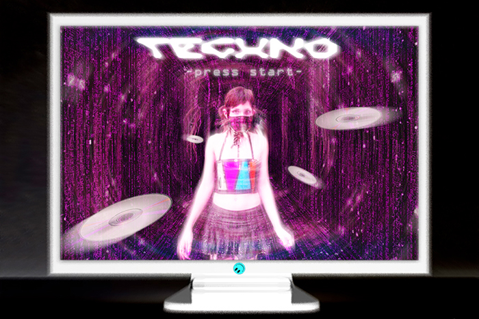

This was our first project in this class and I had a lot of fun living in my matrix fantasy. I made an image that was starring myself in a video game style image. I have been using photoshop for years at this point but I had a lot of fun working on this project. I don't usually include myself in my images so this was a cool concept.